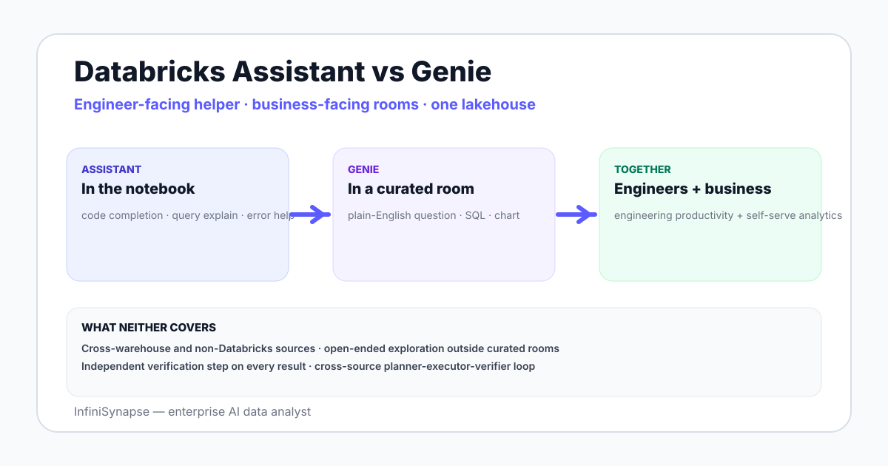

Databricks Assistant vs Genie in 2026: What Each One Does
Databricks Assistant vs Genie in 2026 — the two AI surfaces on Databricks compared by audience, scope, source, governance, and where each one earns the seat.
AuthorInfiniSynapse Research, product and data architecture team
Published2026-06-28 · Last verified 2026-06-28 · Next review 2026-09-28
Evidence baseDatabricks AI/BI Genie and Databricks Assistant official documentation, public release notes through 2026-Q2, hands-on usage in real notebooks and rooms.
Disclosure: Published by InfiniSynapse, which sells an AI data analyst that competes with both on some workloads. The comparison aims to describe each Databricks surface fairly and notes where an external agent fits.
TL;DR
Databricks Assistant is an engineer-facing AI coding helper inside Databricks notebooks — code completion, query explanation, error help, refactoring.
Databricks Genie (AI/BI Genie) is a business-user-facing conversational analytics surface in curated rooms — plain-English questions, generated SQL, charts.
They overlap in the underlying foundation models but serve different audiences and surfaces. Assistant lives in the notebook; Genie lives in a room.
Most teams need both — Assistant accelerates engineers writing dbt models and notebooks; Genie opens self-serve analytics to business users on those models.
Neither one handles cross-warehouse or non-Databricks sources; for that, an external data agent like InfiniSynapse complements both.
Databricks Assistant is an engineer-facing AI coding helper inside notebooks; Databricks Genie is a business-user-facing conversational analytics surface in curated rooms. Different audiences, different surfaces, same foundation. Most teams use both — Assistant for engineers building models, Genie for business users querying those models.

What Databricks Assistant is
Databricks Assistant lives inside the notebook and SQL editor. It is an engineer-facing AI helper across several jobs:
Code completion and inline suggestions. Like a code copilot, scoped to Python, SQL, R, and Scala in Databricks notebooks.
Query explanation. Highlight a SQL query; Assistant explains what it does in plain English.
Error help. Stack trace or SQL error from a cell run; Assistant proposes a fix.
Refactoring and transformation. Convert pandas to PySpark, optimize a SQL query, generate test cases.
The audience is engineers, analytics engineers, and data scientists. The surface is the notebook or SQL editor — not a self-serve conversational room.
What Databricks Genie is
Genie (AI/BI Genie) is a business-user-facing conversational analytics surface. A data team curates a room — a set of tables, instructions, and example queries — and business users ask questions in plain English inside the room. Genie generates SQL, runs it, and returns answers with charts.
Detail is in the companion Databricks Genie guide. The short version: Genie is the natural-language layer on top of Databricks SQL Warehouse and Unity Catalog. It is for business users who do not write SQL.
Side-by-side comparison
Dimension
Databricks Assistant
Databricks Genie
Primary audience
Engineers, analytics engineers, data scientists
Business users, analysts in shared rooms
Surface
Notebook + SQL editor
Curated room
Input
Code + natural language
Natural language only
Output
Code suggestions, explanations, fixes
SQL + result + chart
Curation needed
None — works out of the box on existing notebooks
High — each room needs tables, instructions, examples
Governance grounding
Notebook context + workspace metadata
Curator instructions + Unity Catalog + example SQL
Best for
Speed up engineering work in Databricks
Open self-serve analytics on curated models
When to use each
Use Databricks Assistant when
You are an engineer writing dbt models, SQL queries, or PySpark notebooks in Databricks.
You need a query explained or a stack trace debugged.
You are refactoring pandas to PySpark or porting code between dialects.
Use Databricks Genie when
You are a business user asking a question against a curated room.
Your audience does not write SQL.
The data lives in Databricks and is modeled into a Unity Catalog the room can curate.
The two are not in tension — most teams running on Databricks adopt both. The engineering team uses Assistant for productivity; the business team uses Genie for self-serve analytics.
What neither one covers
Three real gaps remain in 2026:
Cross-warehouse or non-Databricks sources. Genie operates inside a Databricks room. Assistant operates inside a Databricks notebook. Neither queries a Snowflake share or a transactional Postgres outside the lakehouse without federation.
Open-ended exploration without a curated room. Genie depends on curation; a question outside the room boundary is a question Genie cannot answer well.
Deeper agent loop with verification on every result. For audit-grade postures that require independent verification queries on each output, external data agents add a planner-executor-verifier separation neither surface provides natively.
If your data lives in Databricks and you need both engineer productivity and business self-serve: enable both Assistant and Genie. They are not competitors.
If your engineers are the only AI audience: Assistant alone is enough — Genie requires room curation effort you do not need.
If your business users are the AI audience and engineers do not need Databricks-native code help: Genie alone, with a strong curation discipline.
If sources span Databricks plus Snowflake or Postgres or files: layer an external data agent on top of both to handle cross-source questions.
Assistant accelerates the engineer typing the code. Genie opens self-serve analytics on the result. Different jobs, complementary tools.
Compare Databricks tools with a cross-source AI data analyst
Connect a Databricks workspace plus a second source (Snowflake, Postgres, S3, CSV) read-only. Seed a small knowledge base. Ask one question that spans Databricks plus the second source — the kind neither Assistant nor Genie reaches alone.
What is the difference between Databricks Assistant and Genie?
Databricks Assistant is an engineer-facing AI helper inside notebooks and the SQL editor, covering code completion, query explanation, error help, and refactoring across Python, SQL, R, and Scala. Databricks Genie is a business-user-facing conversational analytics surface in curated rooms where users ask plain-English questions and Genie returns SQL, data, and a chart. Different audiences, different surfaces, same Databricks foundation.
Do I need both Databricks Assistant and Genie?
Most teams running on Databricks adopt both because they serve different jobs. Assistant accelerates engineers writing dbt models, PySpark notebooks, and SQL queries; Genie opens self-serve analytics to business users on the curated rooms built on top of those models. Teams with only engineers as the AI audience can use Assistant alone; teams with only business users can use Genie alone.
When should I use Databricks Assistant?
Use Assistant when you are writing dbt models, SQL queries, or PySpark notebooks in Databricks and want code completion or inline suggestions; when you need a query explained in plain English; when you are debugging a stack trace or SQL error; or when you are refactoring code such as pandas to PySpark or optimizing a SQL query. The audience is engineers, analytics engineers, and data scientists working inside the Databricks workspace.
When should I use Databricks Genie?
Use Genie when you are a business user asking a data question against a curated room, when your audience does not write SQL and prefers a conversational surface, and when your data lives in Databricks and has been modeled into a Unity Catalog room curators have prepared with table selections, instructions, and example queries. The audience is non-technical analysts and business stakeholders.
What does Databricks Assistant cost?
Databricks Assistant is included with Databricks workspaces under the platform compute pricing — there is no separate per-seat AI charge in the published 2026 pricing, but compute used by Assistant interactions consumes workspace compute time. Genie has its own usage model tied to AI/BI compute. Check the latest Databricks pricing reference because both surfaces have evolved through 2025 and 2026.
What do Databricks Assistant and Genie not cover?
Three gaps remain in 2026: cross-warehouse or non-Databricks sources are out of reach for both, since Genie operates inside a Databricks room and Assistant inside a Databricks notebook; open-ended exploration without a curated room is weak for Genie; and a deeper agent loop with independent verification queries on every result is not the native shape of either surface. External data agents complement the gaps.
How do Databricks Assistant and Genie compare to external AI data agents?
Assistant and Genie are bundled with Databricks and inherit lakehouse governance, which is their strongest fit signal. External AI data agents like InfiniSynapse cover cross-source analysis spanning Databricks plus Snowflake, Postgres, or files, add a deeper planner-executor-verifier loop with verification on every result, and emit a richer evidence trail for audit-grade workflows. The patterns complement rather than replace each other.
Methodology and review notes
Last updated: 2026-06-28 · Next scheduled review: 2026-09-28
This comparison synthesizes Databricks Assistant and AI/BI Genie official documentation, Databricks release notes through 2026-Q2, hands-on usage in notebooks and rooms, and field experience with teams operating both surfaces in production. Where capabilities have evolved during 2025 and 2026, the most recent observed behavior is used.
Conflict of interest: InfiniSynapse publishes this guide and sells an enterprise AI data analyst. To reduce bias, the page leads with the topic itself, treats InfiniSynapse as one option among many, and links to external sources for every numeric claim.
Update cadence: Reviewed every 90 days for accuracy and link health.